БЛОК ДВИГАТЕЛЯ > ПРОВЕРКА |
| 1. ПРОВЕРЬТЕ УСТАНОВОЧНЫЙ БОЛТ ГОЛОВКИ БЛОКА ЦИЛИНДРОВ |
| 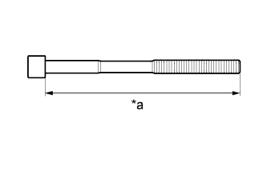 |
С помощью штангенциркуля измерьте длину установочного болта головки блока цилиндров от седла до торца.
| *a | Измеренная длина |
| 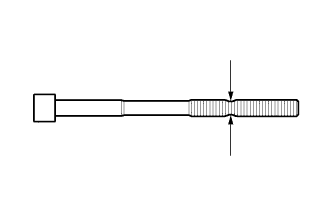 |
С помощью штангенциркуля измерьте диаметр удлиненного резьбового участка в самой узкой видимой зоне.
| 2. ПРОВЕРЬТЕ РЫЧАГ ПРИВОДА КЛАПАНА № 1 В СБОРЕ |
Проверните ролик рукой и убедитесь, что он вращается плавно.
Если ролик не вращается плавно, замените рычаг привода клапана № 1 в сборе.
| 3. ПРОВЕРЬТЕ МЕХАНИЗМ РЕГУЛИРОВКИ ЗАЗОРА В ПРИВОДЕ КЛАПАНА В СБОРЕ |
Поместите механизм регулировки зазора в приводе клапана в емкость, наполненную моторным маслом.
| 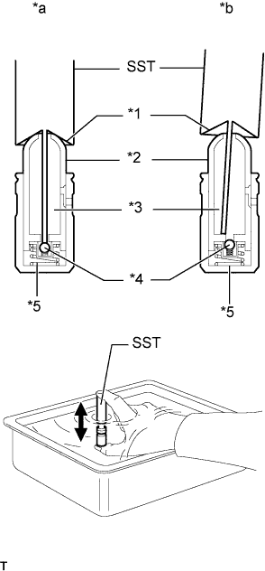 |
Вставьте наконечник специального инструмента в плунжер механизма регулировки зазора в приводе клапана и надавите на запорный шарик внутри плунжера.
| *1 | Конусная часть |
| *2 | Плунжер |
| *3 | Камера низкого давления |
| *4 | Запорный шарик |
| *5 | Камера высокого давления |
| *a | ПРАВИЛЬНО |
| *b | НЕПРАВИЛЬНО |
Прижав SST к механизму регулировки зазора в приводе клапанов в сборе, переместите плунжер вверх и вниз 5-6 раз.
Проверьте ход плунжера и выпустите воздух.
После выпуска воздуха извлеките SST. Затем попробуйте быстро и с усилием нажать на плунжер рукой.
| 4. ПРОВЕРЬТЕ РАСПРЕДВАЛ |
Проверьте биение распредвала.
Установите распредвал на V-образные призмы.
Индикатором часового типа измерьте радиальное биение на центральной шейке.
Микрометром измерьте высоту рабочей части кулачков.
| Параметр / Устройство | Заданные условия |
| Распредвал впускных клапанов | 43,890 - 43,990 мм (1,728 - 1,732 дюйма) |
| Распредвал выпускных клапанов | 44,262 - 44,362 мм (1,743 - 1,747 дюйма) |
| Параметр / Устройство | Заданные условия |
| Распредвал впускных клапанов | 43,840 мм (1,726 дюйма) |
| Распредвал выпускных клапанов | 44,212 мм (1,741 дюйма) |
Микрометром измерьте диаметр шейки.
| Параметр / Устройство | Заданные условия |
| Шейка №1 | 35,946-35,960 мм (1,4152-1,4157 дюйма) |
| Для остальных шеек | 25,959 - 25,975 мм (1,0221 - 1,0226 дюйма) |
| 5. ПРОВЕРЬТЕ ЗУБЧАТОЕ КОЛЕСО РАСПРЕДВАЛА В СБОРЕ |
Зафиксируйте распредвал.
| 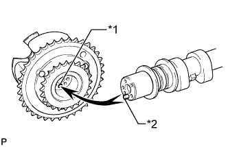 |
Поместите зубчатое колесо распредвала в сборе на распредвал, совместив отверстие под штифт и стопорный штифт.
| *1 | Отверстие для поршневого пальца |
| *2 | Стопорный штифт |
Слегка прижмите и поверните зубчатое колесо распредвала относительно распредвала и нажмите сильнее на колесо, когда штифт войдет в отверстие.
Убедитесь в отсутствии зазора между фланцем зубчатого колеса распредвала в сборе и распредвалом.
| 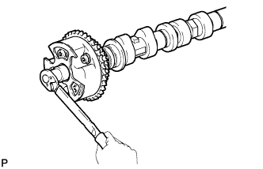 |
Удерживая распредвал, затяните болт крепления фланца.
Проверьте замок зубчатого колеса распредвала.
Зафиксируйте распредвал на месте и убедитесь, что зубчатое колесо распредвала заблокировано.
| 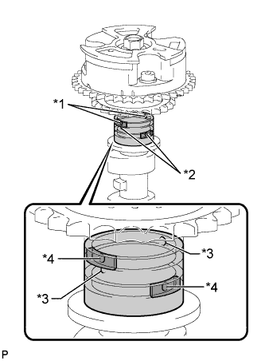 |
Извлеките стопорный штифт.
Закройте 4 масляных канала на шейке распредвала виниловой лентой, как показано на рисунке.
| *1 | Канал опережения |
| *2 | Канал запаздывания |
| *3 | Открыто |
| *4 | Закрыто |
 | Резина |
 | Виниловая лента |
Прорвите ленту со стороны канала опережения и со стороны канала запаздывания, который находится на обратной стороне отверстия со стороны канала опережения, как показано на рисунке.
| 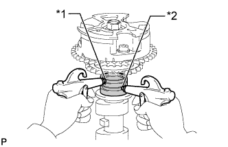 |
Подайте воздух под давлением приблизительно 200 кПа (2,0 кгс/см2, 28 фунтов на кв. дюйм) в 2 открытых канала.
| *1 | Канал опережения |
| *2 | Канал запаздывания |
| 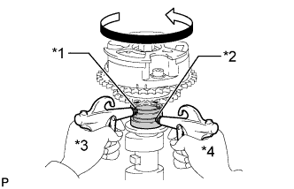 |
Убедитесь, что зубчатое колесо распредвала вращается в направлении угла опережения при снижении давления воздуха, подаваемого со стороны канала запаздывания.
| *1 | Канал опережения |
| *2 | Канал запаздывания |
| *3 | Поддержание давления |
| *4 | Уменьшение давления |
Когда зубчатое колесо распредвала займет положение, соответствующее максимальному углу опережения, сначала сбросьте давление воздуха в канале со стороны запаздывания, а затем в канале со стороны опережения.
Проверьте плавность вращения.
2-3 раза поверните зубчатое колесо распредвала в пределах угла его поворота (21°), но не доводите его до положения, соответствующего предельному углу запаздывания. Убедитесь, что зубчатое колесо вращается свободно.
Проверьте, фиксируется ли муфта в положении наибольшего запаздывания.
Убедитесь, что зубчатое колесо распредвала фиксируется в положении максимального запаздывания.
| 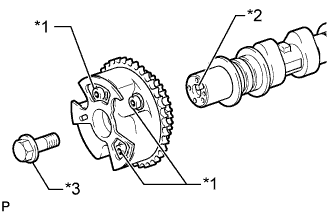 |
Выверните болт фланца и снимите зубчатое колесо распредвала.
| *1 | Не снимайте |
| *2 | Стопорный штифт |
| *3 | Фланцевый болт |
| 6. ПРОВЕРЬТЕ ЗУБЧАТОЕ КОЛЕСО РАСПРЕДВАЛА ВЫПУСКНЫХ КЛАПАНОВ В СБОРЕ |
Зафиксируйте распредвал.
| 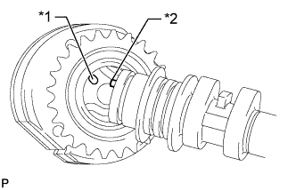 |
Поместите зубчатое колесо распредвала выпускных клапанов в сборе на распредвал, совместив отверстие под штифт и стопорный штифт.
| *1 | Отверстие для поршневого пальца |
| *2 | Стопорный штифт |
Слегка прижмите и поверните зубчатое колесо распредвала относительно распредвала и нажмите сильнее на колесо, когда штифт войдет в отверстие.
Убедитесь в отсутствии зазора между фланцем зубчатого колеса и распредвалом.
| 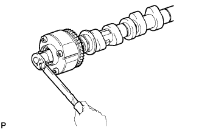 |
Удерживая распредвал, затяните болт крепления фланца.
Проверьте фиксацию зубчатого колеса распредвала выпускных клапанов.
Проверьте надежность фиксации зубчатого колеса распредвала выпускных клапанов.
| 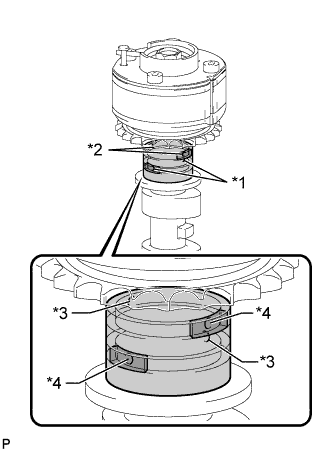 |
Извлеките стопорный штифт.
Закройте 4 масляных канала на шейке распредвала виниловой лентой, как показано на рисунке.
| *1 | Канал опережения |
| *2 | Канал запаздывания |
| *3 | Открыто |
| *4 | Закрыто |
| Резина |
| Виниловая лента |
Прорвите ленту со стороны канала опережения и со стороны канала запаздывания, который находится на обратной стороне отверстия со стороны канала опережения, как показано на рисунке.
| 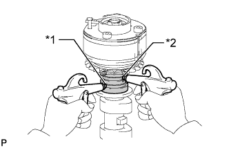 |
Подайте воздух под давлением приблизительно 200 кПа (2,0 кгс/см2, 28 фунтов на кв. дюйм) в 2 открытых канала (со стороны опережения и со стороны запаздывания).
| *1 | Канал опережения |
| *2 | Канал запаздывания |
| 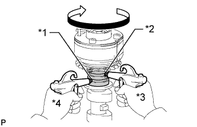 |
Убедитесь, что при снижении давления воздуха в канале со стороны опережения зубчатое колесо распредвала вращается в направлении угла запаздывания.
| *1 | Канал опережения |
| *2 | Канал запаздывания |
| *3 | Поддержание давления |
| *4 | Уменьшение давления |
Когда зубчатое колесо распредвала выпускных клапанов займет положение, соответствующее максимальному запаздыванию, сначала сбросьте давление воздуха в канале со стороны опережения, а затем в канале со стороны запаздывания.
Проверьте плавность вращения.
Два-три раза поверните зубчатое колесо распредвала выпускных клапанов в сборе в пределах его диапазона поворота (18,5°), но не доводите его до положения, соответствующего максимальному углу опережения. Убедитесь, что зубчатое колесо вращается свободно.
Проверьте фиксацию в положении наибольшего опережения.
Убедитесь, что зубчатое колесо распредвала выпускных клапанов зафиксировано в положении максимального опережения.
| 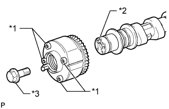 |
Выверните болт фланца и снимите зубчатое колесо распредвала выпускных клапанов в сборе.
| *1 | Не снимайте |
| *2 | Стопорный штифт |
| *3 | Фланцевый болт |
| 7. ПРОВЕРЬТЕ ЦЕПЬ № 1 В СБОРЕ |
| 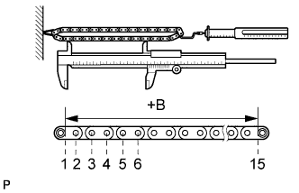 |
С помощью пружинного динамометра натяните цепь № 1 с усилием 147 Н (15 кгс, 33 фунт-силы) и измерьте длину цепи № 1 с помощью штангенциркуля.
| *a | Участок измерения |
| 8. ПРОВЕРЬТЕ ЦЕПЬ № 2 В СБОРЕ |
С помощью пружинного динамометра натяните цепь № 2 с усилием 147 Н (15 кгс, 33 фунт-силы) и измерьте длину цепи № 2 с помощью штангенциркуля.
| 9. ПРОВЕРЬТЕ ВЕДУЩУЮ ЗВЕЗДОЧКУ ГРМ |
| 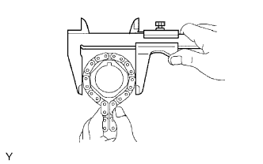 |
Оберните цепь № 1 вокруг звездочки.
Штангенциркулем измерьте диаметр ведущей звездочки распредвала с цепью № 1.
| 10. ПРОВЕРЬТЕ ПРОМЕЖУТОЧНУЮ ШЕСТЕРНЮ № 1 |
| 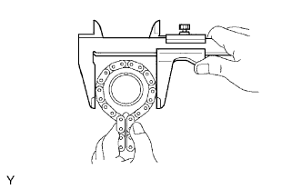 |
Оберните цепь № 1 вокруг шестерни.
Штангенциркулем измерьте диаметр промежуточной шестерни № 1 с цепью № 1.
| 11. ПРОВЕРЬТЕ МАСЛЯНЫЙ ЗАЗОР ВАЛА ПРОМЕЖУТОЧНОЙ ШЕСТЕРНИ № 1 |
Микрометром измерьте диаметр вала промежуточной шестерни № 1.
Микрометром измерьте диаметр отверстия в промежуточной шестерне.
Вычтите диаметр оси промежуточной шестерни из диаметра отверстия в промежуточной шестерне.
| 12. ПРОВЕРЬТЕ НАТЯЖИТЕЛЬ ЦЕПИ № 1 В СБОРЕ |
| 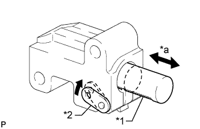 |
Отведите стопорную пластину вверх, чтобы освободить фиксатор. Нажмите на плунжер и убедитесь, что он перемещается плавно.
| *1 | Плунжер |
| *2 | Стопорная пластина |
| *a | Перемещается плавно |
| 13. ПРОВЕРЬТЕ НАТЯЖИТЕЛЬ ЦЕПИ № 2 В СБОРЕ |
| 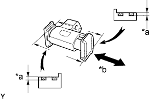 |
Убедитесь в плавности хода плунжера.
| *a | Глубина |
| *b | Перемещается плавно |
Измерьте глубину износа натяжителя цепи.
| 14. ПРОВЕРЬТЕ НАТЯЖИТЕЛЬ ЦЕПИ № 3 В СБОРЕ |
| 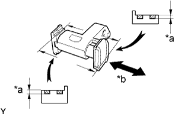 |
Убедитесь в плавности хода плунжера.
| *a | Глубина |
| *b | Перемещается плавно |
Измерьте глубину износа натяжителя цепи.
| 15. ПРОВЕРЬТЕ БАШМАК НАТЯЖИТЕЛЯ ЦЕПИ |
| 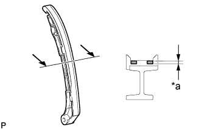 |
Измерьте глубину износа башмака натяжителя цепи.
| *a | Глубина |
| 16. ПРОВЕРЬТЕ УСПОКОИТЕЛЬ ЦЕПИ № 1 |
| 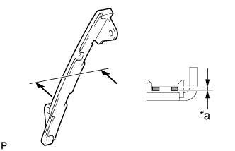 |
Измерьте глубину износа успокоителя цепи № 1.
| *a | Глубина |
| 17. ПРОВЕРЬТЕ УСПОКОИТЕЛЬ ЦЕПИ № 2 |
| 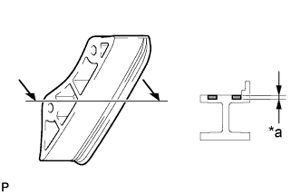 |
Измерьте глубину износа успокоителя цепи № 2.
| *a | Глубина |
| 18. ПРОВЕРЬТЕ ОСЕВОЙ ЗАЗОР РАСПРЕДВАЛА |
| 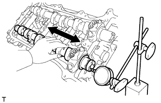 |
Установите распредвалы (Нажмите здесь).
Смещая распредвал вперед и назад, индикатором часового типа измерьте осевой зазор.
| 19. ПРОВЕРЬТЕ МАСЛЯНЫЙ ЗАЗОР РАСПРЕДВАЛА |
Очистить крышки подшипников, картер и шейки распредвала.
Установите распредвалы в корпус распредвалов.
| 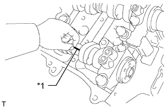 |
Поместите на каждую шейку коленчатого вала полоску сминаемого пластичного калибра Plastigage.
| *1 | Сминаемый пластичный калибр Plastigage |
Установите крышки подшипников распредвала (Нажмите здесь).
Снимите крышки подшипников распредвала (Нажмите здесь).
| 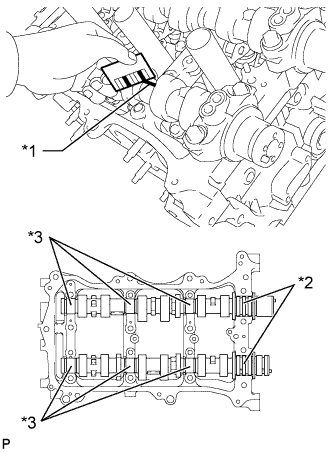 |
Измерьте сминаемый пластичный калибр в наиболее широком месте.
| Параметр / Устройство | Заданные условия |
| Для шейки №1 | 0,032 - 0,063 мм (0,00126 - 0,00248 дюйма) |
| Для остальных шеек | 0,025 - 0,062 мм (0,000984 - 0,00244 дюйма) |
| Параметр / Устройство | Заданные условия |
| Для шейки №1 | 0,10 мм (0,00394 дюйма) |
| Остальные шейки | 0,09 мм (0,00354 дюйма) |
| *1 | Сминаемый пластичный калибр Plastigage |
| *2 | Шейка № 1 |
| *3 | Для остальных шеек |
| 20. ПРОВЕРЬТЕ ВЫПУСКНОЙ КОЛЛЕКТОР В СБОРЕ |
| 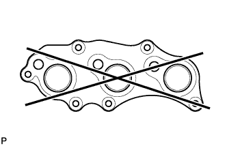 |
С помощью прецизионной поверочной линейки и комплекта плоских щупов измерьте коробление поверхности, соприкасающейся с головкой блока цилиндров.
| 21. ПРОВЕРЬТЕ ПЛОСКОСТНОСТЬ ВПУСКНОГО КОЛЛЕКТОРА |
| 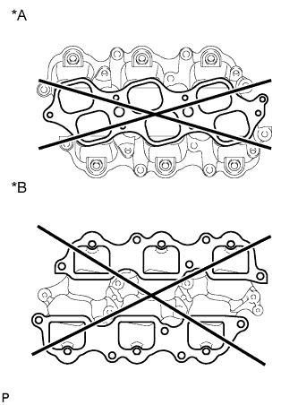 |
С помощью прецизионной поверочной линейки и комплекта плоских щупов измерьте коробление поверхностей, контактирующих с головкой блока цилиндров и расширительным бачком на впуске воздуха.
| Параметр / Устройство | Заданные условия |
| Со стороны уравнительного бачка на впуске воздуха | 0,80 мм (0,0315 дюйма) |
| Со стороны головки блока цилиндров | 0,20 мм (0,00787 дюйма) |
| *A | Со стороны уравнительного бачка воздухозаборника |
| *B | Сторона головки блока цилиндров |